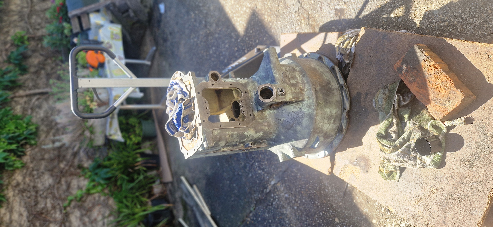

Steyr T80 • Getriebe
Gehäuseaufbereitung
Dokumentation der Oberflächenbehandlung und Vorbereitung zur Lackierung.

1. Grobe Reinigung
Das Getriebegehäuse muss vor dem Lackieren gründlichst gereinigt werden. Hierzu verwende ich einen Kärcher und Kaltreiniger, um den groben Dreck, verharzte Öle und Fettreste vom Gehäuse zu entfernen.

2. Schleifen
Entfernen von losem Altlack, Roststellen und Unebenheiten. Dichtflächen und Gewindebohrungen werden geschützt, während die Gussoberfläche für eine optimale Haftung mechanisch angeraut wird.

3. Grundieren
Nach dem vollständigen Entfetten mit Silikonentferner wird eine hochwertige 2K-Epoxidharz-Grundierung aufgetragen, um das Gussgehäuse dauerhaft vor erneutem Rostbefall zu schützen.